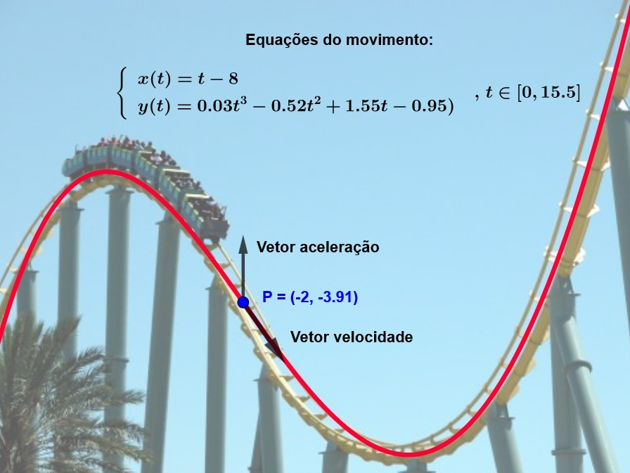

VETOR VELOCIDADE
As curvas paramétricas também são uma maneira poderosa de descrever trajetórias e movimentos em matemática e física. Por exemplo, pensemos em um trem de uma montanha-russa:
Qual será a velocidade de descida? Vamos calculá-la!! Fique ligado porque você fará isso em Física muitas vezes :-)
Fizemos uma simulação da curva que descreve o trecho da trajetória do trem da imagem:

E obtivemos as seguintes equações paramétricas:
\(\begin{cases} x(t)= t-8 \\ y(t) = 0.03t^3 - 0.52t^2 + 1.55t - 0.95)\end{cases} \quad ,\,t\in [0,15.5]\)
Qual é a direção do movimento do trem 6 minutos depois de iniciar a aventura?
Vamos lá! Derivando a equação paramétrica obtemos a função velocidade:
\(\vec{v}(t)=(1, 0.09t^2 - 1.04t + 1.55),\;t\in [0,15.5]\)
E substituindo t por 6, obtemos o vetor velocidade \(\; \vec{v}=\vec{v}(6)=(1, -1.45),\) que é a direção do movimento do trem após 6 minutos do início da aventura.
Observamos que a inclinação do vetor é negativa, portanto, no instante t=6, o trem está descendo. A que velocidade? Pois bem, neste caso, diremos que a velocidade escalar é \(\; v=||(1, -1.45)||=\sqrt{1^2+(-1.45)^2}=1.76\). Daí podemos afirmar que, a partir de nossa simulação, o trem está descendo a uma velocidade de 1.76 m/s.
O que podemos dizer da aceleração? Mesma coisa!! Vamos lá?
A aceleração é a derivada da velocidade, certo? Então vamos derivar a função velocidade!
Derivando a função velocidade, obtemos a função aceleração que é
\(\vec{a}(t)=(0, 0.18t - 1.04), \;t\in [0,15.5]\)
E, substituindo t por 6, obtemos o vetor aceleração após 6 minutos do início da aventura \(\; \vec{a}=\vec{a}(6)=(0, 0.04)\), com inclinação positiva. Logo, a aceleração escalar é \(\; a=||(0, 0.04)||=\sqrt{0^2+(0.04)^2}=0.04\). Diremos então que o trem está acelerando a 0.04 m/s2.
Resumindo: o trem está descendo a uma velocidade de 1.76 m/s e acelerando a 0.04 m/s2.
Legal, né? Você vai chegar crack em Física!!!
Todo o que nós estamos fazendo depende da simulação, ok? Não estamos tratando com dados reais. Você entenderá isso muito melhor em Física. Fique tranquilo. Neste contexto não é tão relevante o quanto é de boa a simulação.